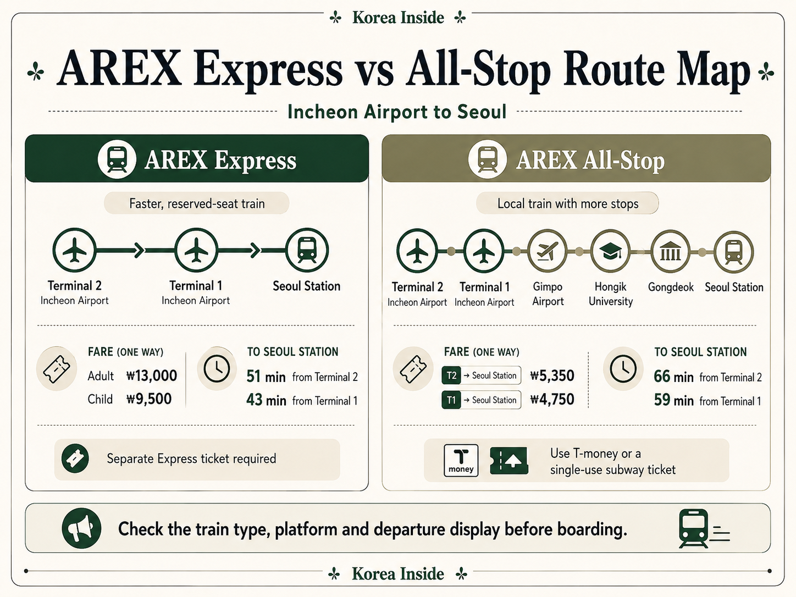
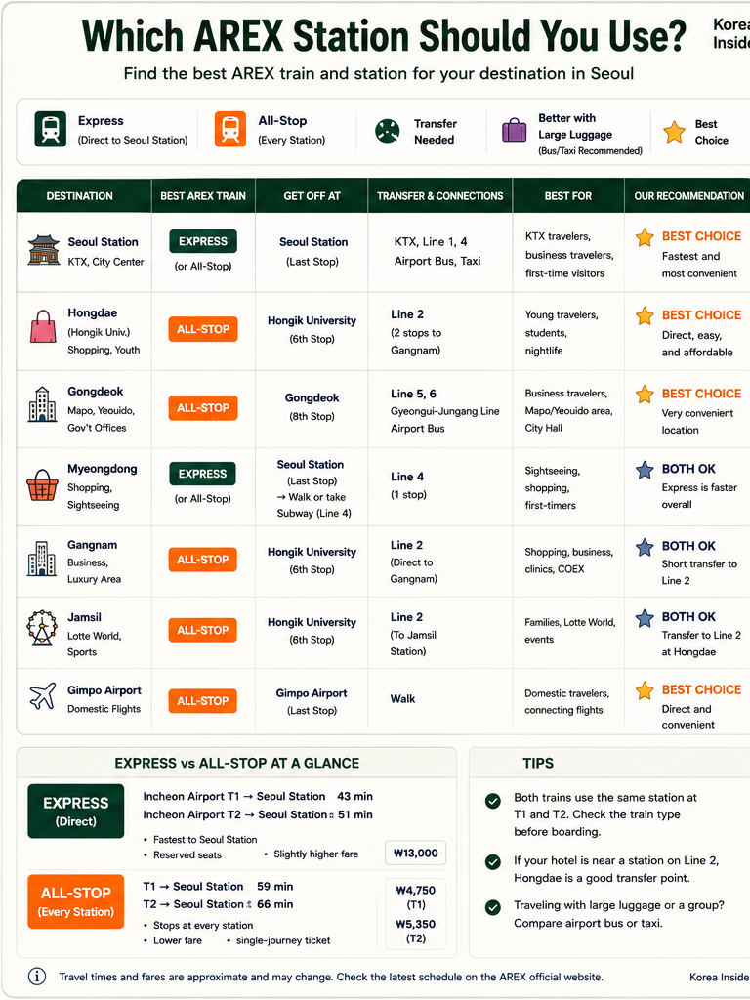
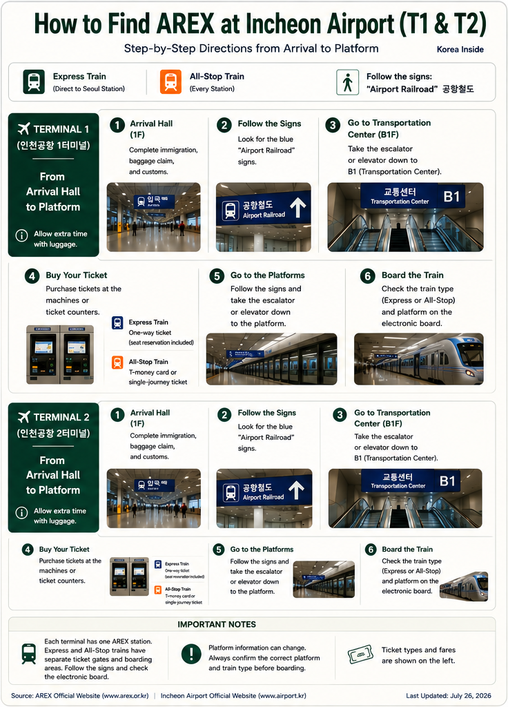
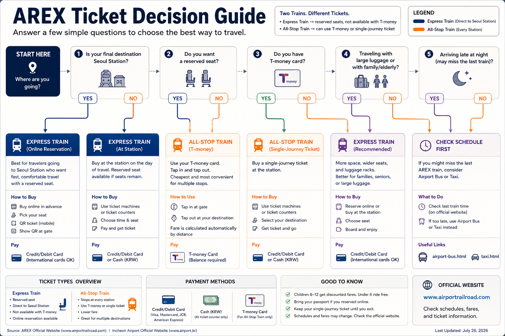
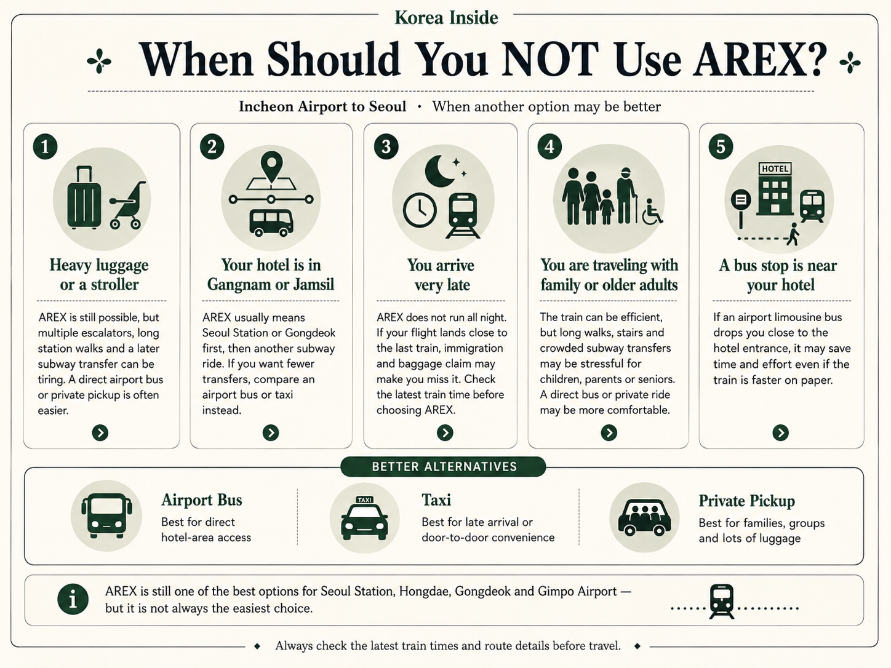

Express or All-Stop?
Both trains connect Incheon Airport with Seoul, but they follow different stopping patterns and use different tickets.
Express Train
Express runs from Terminal 2 through Terminal 1 to Seoul Station without intermediate passenger stops. It has an assigned seat and requires a separate ticket, which suits a direct trip to Seoul Station or an onward KTX connection with enough transfer time.
All-Stop Train
All-Stop serves every AREX station, including Gimpo Airport, Hongik University and Gongdeok. It works like commuter rail and accepts T-money, so it can take you closer to a hotel before Seoul Station and avoid an unnecessary trip back across the city.
“Seoul” is not a single destination. A train that saves time on the airport-to-Seoul Station segment can lose that advantage during a transfer, a long station walk or a trip back toward the west. When the rail route becomes awkward with luggage, compare the other Incheon Airport transfer options; an airport bus or official taxi may involve less handling.
Express vs All-Stop Quick Comparison
This table covers the differences that are useful at the ticket machine. The destination sections below explain what happens after you leave the train.
| Feature | Express Train | All-Stop Train |
|---|---|---|
| Stops | Nonstop between the airport terminals and Seoul Station | All stations, including Gimpo Airport, Hongik University and Gongdeok |
| T1 to Seoul Station | 43 minutes | 59 minutes; some trains take 2–6 minutes longer |
| T2 to Seoul Station | 51 minutes | 66 minutes; some trains take 2–6 minutes longer |
| Adult fare | ₩13,000 official selling fare | To Seoul Station with a transit card: T1 ₩4,750; T2 ₩5,350 |
| Seat | Assigned seat | Open commuter seating; a seat is not guaranteed |
| T-money | No; use a separate Express ticket | Yes; tap a sufficiently funded transit card |
| Ticket type | Reserved Express ticket with QR code or station-issued ticket | T-money or another accepted transit card, or a single-use transportation card |
| Main trade-off | Faster and seated, but more expensive and limited to Seoul Station | Cheaper with more useful stops, but slower and without an assigned seat |
How Much Does AREX Cost?
Express has a fixed selling fare to Seoul Station. All-Stop charges by distance, so both your airport terminal and the station where you leave the train affect the price.
Express Train fare
The official booking system lists ₩13,000 for a nonmember adult, ₩12,500 for a member adult and ₩9,500 for a child. Express uses a separate reserved ticket rather than a distance-based transit fare, and the selling fare is the same from T1 or T2 to Seoul Station.
All-Stop fare
With a prepaid or postpaid transit card, an adult trip from T1 costs ₩4,750 to Seoul Station or ₩4,650 to Hongik University. From T2, those fares are ₩5,350 and ₩5,250. The extra ₩600 reflects the additional distance from Terminal 2.
T-money versus a single-use card
T-money works on All-Stop by tapping in and out; it is not an Express ticket. An adult single-use transportation card costs the transit-card fare plus ₩100, with a ₩500 refundable deposit. The deposit is returned after the card is inserted into a refund machine at the destination.
How Much Time Does Express Really Save?
The published journey ends at Seoul Station. Your actual trip also includes the airport station walk, waiting, the next connection and the walk to the hotel.
From Terminal 1
Express reaches Seoul Station in 43 minutes. All-Stop is scheduled for 59 minutes, although some services take another 2–6 minutes.
From Terminal 2
Express takes 51 minutes to Seoul Station. All-Stop takes 66 minutes, with the same possible 2–6-minute extension on some trains.
That makes Express about 15–16 minutes faster on the train itself. The gap can shrink when Express leaves you with a subway transfer at Seoul Station, while All-Stop reaches Hongik University or Gongdeok directly. Luggage, elevators and the final walk can matter more than the timetable difference.
Main AREX Stations and Stops
Express serves the two airport terminals and Seoul Station. All-Stop adds the intermediate stations that often decide whether the rest of the journey is straightforward.

Incheon Airport Terminal 2
Express and All-Stop both begin here before calling at T1. The station is linked to the Terminal 2 transportation center, but it is separate from the T1 station, so the terminal shown on the flight booking matters.
Incheon Airport Terminal 1
Both trains also stop at the station beneath the Terminal 1 transportation center. Airport circulation can change, so the current Airport Railroad / AREX signs are more reliable than a gate number saved from an older guide.
Gimpo International Airport
Only All-Stop serves Gimpo Airport, where passengers can connect with Subway Lines 5 and 9, the Gimpo Goldline and other rail services. A flight connection still includes a walk to the correct terminal, so the train arrival minute is not the boarding time.
Hongik University
All-Stop reaches Hongik University directly, with connections to Subway Line 2 and the Gyeongui-Jungang Line. For a Hongdae hotel, riding Express to Seoul Station and then traveling back west is usually unnecessary. The station is large, though, and the correct exit can make a noticeable difference with luggage.
Gongdeok
All-Stop calls at Gongdeok before Seoul Station. Hotels nearby need no second train, while Subway Lines 5 and 6 and the Gyeongui-Jungang Line provide onward connections. The exact hotel pin still determines which exit and transfer are practical.
Seoul Station
Both services terminate at Seoul Station, where Subway Lines 1 and 4, the Gyeongui-Jungang Line and national rail services connect. AREX platforms are deep in the complex, and reaching a subway or KTX platform involves corridors, elevators or escalators and additional walking.
Where Are You Going After AREX?
The useful question is not only which train is faster, but where you can leave AREX and how much travel remains after that.

Seoul Station
Express gets there faster and provides an assigned seat; All-Stop reaches the same station for less. A nearby hotel may be walkable, but a hotel on the other side of the complex can still mean a long exit route. When the final walk looks awkward with bags, compare a bus stop or taxi drop-off near the address.
Hongdae
All-Stop stops directly at Hongik University Station, so there is little reason to ride Express all the way to Seoul Station and then travel back west for a Hongdae hotel. The station is large, though, and the correct exit can make a noticeable difference when you are pulling luggage.
Gongdeok
All-Stop reaches Gongdeok without a transfer. Hotels close to the station are a straightforward walk; other addresses can continue on Lines 5 or 6, with the exact hotel pin deciding which route works.
Myeongdong
Express to Seoul Station followed by Line 4 can be a fast rail route, while All-Stop covers the airport segment for less. Neither removes the transfer. With several bags, an airport bus that stops close to the hotel may be easier than moving through Seoul Station.
Jongno
Jongno covers too wide an area for one AREX answer. Some hotels connect naturally from Gongdeok on Line 5; others work better from Seoul Station or by airport bus. Use the exact address and station exit rather than the district name alone.
Dongdaemun
A common rail route is Express to Seoul Station and then Line 4 toward the station nearest the hotel. It is still a transfer with luggage, so a direct airport-bus stop near the accommodation can be worth comparing.
Gangnam
There is no single AREX transfer that works for all of Gangnam. All-Stop can connect with Line 9 at Magongnaru or Gimpo Airport, but the useful station depends on the exact address and any further connection. Many Gangnam hotels are simpler to reach by airport bus than by carrying luggage through several rail legs.
Jamsil
AREX usually leaves at least one substantial onward journey to Jamsil, and often more than one rail leg. A suitable airport bus may be simpler, especially with luggage, children or limited mobility.
Gimpo Airport
All-Stop runs directly to Gimpo International Airport Station; Express passes without stopping. Leave time for signs, elevators and the walk to the correct flight terminal or onward subway line.
KTX connection
Express is often the sensible airport train when the next journey starts on KTX at Seoul Station. The AREX arrival time is not the time you can board the KTX: you still need to leave the deep AREX platform, cross the station and reach the correct national-rail platform.
Use Korean map apps to verify the hotel pin, station exit and final walk. An area name alone is not enough to judge the transfer.
How to Find AREX at Terminal 1 and Terminal 2
T1 and T2 have separate stations, but the route from the arrival hall follows the same basic sequence.
- Complete immigration, baggage claim and customs, then enter the public arrival hall.
- Follow Airport Railroad / AREX signs toward the terminal transportation center.
- Continue to the rail area and separate the Express entrance from the All-Stop entrance.
- Buy the correct ticket, or prepare a sufficiently funded transit card for All-Stop.
- Read the live departure display and confirm the Seoul-bound platform before entering.
At Terminal 1: the rail area is in the T1 transportation center. Follow signs for that building rather than directions written for T2.
At Terminal 2: continue toward the T2 transportation center and its own station. There is no need to travel to T1 first.

Airport circulation and temporary routes can change, so current signs are more dependable than a saved gate or exit number. The broader Incheon Airport arrival process explains what happens before you reach the public hall.
Tickets for Express and All-Stop
The two trains use different gates and ticket systems. T-money works on All-Stop, but it does not replace an Express reservation.

Express tickets
The official website and app can search travel dates from today through a maximum of two months ahead. Once a selected train is placed in the cart, payment must be completed within 20 minutes; that limit is not a promise that reservations remain available until 20 minutes before departure. The paid ticket carries a QR code and identifies the train, car and assigned seat.
Tickets are also sold at Express machines and customer information centers at T1, T2 and Seoul Station. AREX lists Visa, Mastercard, JCB, Diners Club, American Express and UnionPay among the supported foreign-issued card networks for Express ticket purchases.
All-Stop tickets
A prepaid transit card such as T-money can be used after it has enough balance for the trip. Tap at the All-Stop gate and tap out at the destination.
Travelers without a transit card can buy a single-use transportation card from a station ticket machine, keep it for the journey and recover the deposit after exiting. The official All-Stop guidance confirms machine sales, but it does not clearly state that foreign-issued cards are accepted, so do not rely on a specific payment method without checking at the station.
The official Express booking site also provides change and return functions and shows any applicable conditions before confirmation. Reseller rules can differ from the operator's own terms.
Seoul Station Is Often Only the Middle of the Journey
Arriving at Seoul Station is not the same as arriving at your hotel.
AREX platforms sit deep inside a large station complex. Reaching the subway, a KTX platform or street level can involve long corridors, an elevator or escalator, and time spent following signs with luggage.
Subway and hotel connections
Line 4 is the usual continuation toward Myeongdong and parts of Dongdaemun, while Line 1 serves other central and eastern connections. The trip is not finished at the subway gate: the correct direction, hotel-side exit and final walk all affect how manageable the route feels.
KTX and national rail
A published AREX arrival minute does not leave you ready to board a KTX. Include the walk from the AREX platform, elevators or escalators, any ticket checks and the route across the station to the correct national-rail platform.
Use Korean map apps to verify the hotel pin, station exit and final walk. An area name alone is not enough to judge the transfer.
City Airport Terminal
The Seoul Station City Airport Terminal is a departure service, not help for passengers arriving from Incheon Airport. Eligible same-day international passengers using Express may be able to complete departure procedures there, subject to the current airline and service conditions.
Luggage, Families and Accessibility
A comfortable train ride does not remove the work of moving bags through the airport station, an interchange and the final hotel route.
On the train
Express provides an assigned seat and dedicated luggage space, which makes its main ride more predictable. All-Stop has commuter-style seating, so a seat is not guaranteed and crowded periods can be difficult with large suitcases, a stroller or children.
Between the train and the hotel
Every bag still has to move from the arrival hall to the airport station, onto AREX, through any Seoul transfer and along the final walk. For a wheelchair user, a traveler with limited mobility or a family managing several bags, elevator routes and transfer distance can matter more than a 15-minute difference on the train.
When that chain includes repeated lifting or long corridors, an airport bus stopping near the hotel or an appropriately sized official taxi may reduce the total burden.

Late Arrival? Work Backward from the Train, Not the Landing Time
AREX does not run 24 hours, and landing time is not platform arrival time.
The current official Express timetable lists the first airport departures at 05:16 from T2 and 05:24 from T1, and the last at 22:40 from T2 and 22:48 from T1. All-Stop follows a different schedule, so use the official dated AREX timetable rather than an old screenshot.
- Start with the last departure from the terminal where your flight lands.
- Work backward through the platform walk and ticket purchase.
- Then allow for immigration, baggage claim and customs.
- Compare the result with the scheduled landing time and a realistic delay margin.
- Have a backup that still operates after the time you can actually reach the platform.
If the last train no longer works, look for an official night bus or another airport bus option. If no suitable service remains, use an official airport taxi stand or a verified pickup with clear meeting and delay terms.
Common AREX Mistakes
The train itself is straightforward. Trouble usually starts when the route is planned only as far as an AREX station.
- Express does not stop at Hongik University. For most Hongdae hotels, All-Stop avoids going to Seoul Station and then traveling back west.
- Seoul Station is not the end of the journey unless the hotel is nearby. Subway corridors, exits and the final walk need time of their own.
- Express and All-Stop have separate tickets and gates. Entering the wrong area creates an avoidable return to the concourse.
- T-money works on All-Stop, not as an Express ticket. Express requires its own reservation or station-issued ticket.
- T1 and T2 are different stations. Directions and departure times must match the terminal where the flight arrives.
- Old fare tables, timetable screenshots and reseller conditions can be out of date. The operator's current pages should be the final reference.
- A late-night plan based on landing time leaves out immigration, baggage, customs, the station walk and ticket purchase.
- Rail is not automatically easier with several large bags. A bus stop near the hotel or an official taxi may remove repeated lifting and transfers.
- Gangnam and Jongno are too broad for one default transfer station. The hotel address, connecting line and final walk can change the sensible route.
AREX Frequently Asked Questions
These are the practical details that tend to matter once a flight, hotel and arrival time are fixed.
How much is AREX from Incheon Airport to Seoul?
The Express adult selling fare is ₩13,000. With a transit card, All-Stop to Seoul Station costs ₩4,750 from T1 or ₩5,350 from T2. Check the current official fare before travel.
How long does AREX take to Seoul Station?
Express takes 43 minutes from T1 or 51 minutes from T2. All-Stop takes 59 minutes from T1 or 66 minutes from T2, with some trains taking 2–6 minutes longer.
Is AREX Express faster than All-Stop?
It is faster to Seoul Station. A hotel near Hongik University, Gongdeok or another intermediate stop may still be quicker to reach on All-Stop because no backtracking is needed.
Can I use T-money on AREX?
Use T-money on the All-Stop Train. Express requires a separate reserved ticket.
Which AREX train should I take to Hongdae?
All-Stop runs directly to Hongik University Station. Express passes Hongdae and ends at Seoul Station, so it usually adds unnecessary travel back toward the west.
Does AREX run 24 hours?
No. Check the official timetable for your terminal and travel date, especially after a late flight.
Where is AREX at Terminal 1?
After customs, follow Airport Railroad / AREX signs from the public arrival hall toward the Terminal 1 Transportation Center and rail area.
Where is AREX at Terminal 2?
After customs, follow Airport Railroad / AREX signs from the public arrival hall toward the Terminal 2 Transportation Center and rail area.
Is AREX good with large luggage?
Express has assigned seating and dedicated luggage space, but every bag still has to move through the airport station and any Seoul transfer. A bus or taxi may involve less handling when there are several large suitcases.
Is AREX better than the airport bus?
AREX is better for predictable rail time and hotels with a simple station connection. A bus can be better when an official stop is close to the hotel and reduces luggage transfers.
Can I buy an AREX ticket with a foreign credit card?
For Express tickets, AREX lists Visa, Mastercard, JCB, Diners Club, American Express and UnionPay as supported foreign-issued card networks. For All-Stop, the official guide confirms that single-use transportation cards are sold at station machines, but it does not clearly confirm foreign-card acceptance at those machines.
What happens if I miss the last train?
Check official night-bus and airport-bus services first. If none fits your destination and time, use an official airport taxi stand or a verified pickup.
Official Sources and Related Guides
Fares, schedules, payment support and operating conditions can change. These official pages are the references for a final check before travel.
- AREX Express introduction — stops, travel time, official selling fare, assigned seating and station locations.
- AREX Express timetable — first, last and dated departure times.
- AREX Express ticket guide — online and station purchase, foreign cards, QR tickets, changes and returns.
- AREX All-Stop introduction — stations, transfer lines, travel time and ticket types.
- AREX All-Stop fare table — distance fares, single-use surcharge and refundable deposit.
- Incheon Airport rail transportation guide — airport transport context and terminal guidance.
- Incheon Airport city terminal guide — Express eligibility and departure-service conditions.
- VISITKOREA airport transportation guide — independent official overview of AREX train types and times.